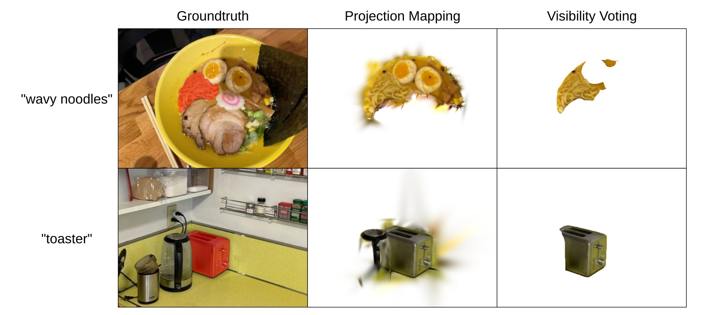

Method

Query-driven 2D localization
Dense ProxyCLIP features are extracted once per image. For a query, the cosine-similarity map is thresholded and a convolutional flood-fill grows the region from the top-scoring pixel, followed by erosion — no SAM proposals needed, so parts and sub-parts are reachable too.
Budget-aware propagation
Frames where the pivot Gaussians are most visible are ranked and ordered backward/forward from the pivot view. A tracking segmentor (EfficientTAM / HQ-SAM 2) propagates the mask; tracklets that disagree with the pivot Gaussians are re-prompted with FPS points.
Visibility voting & rasterization
Each visible Gaussian casts a foreground or background vote per view. The integer vote pair is alpha-blended like color, and pixels where foreground > background form the mask — robust to tracking outliers and occlusion.


